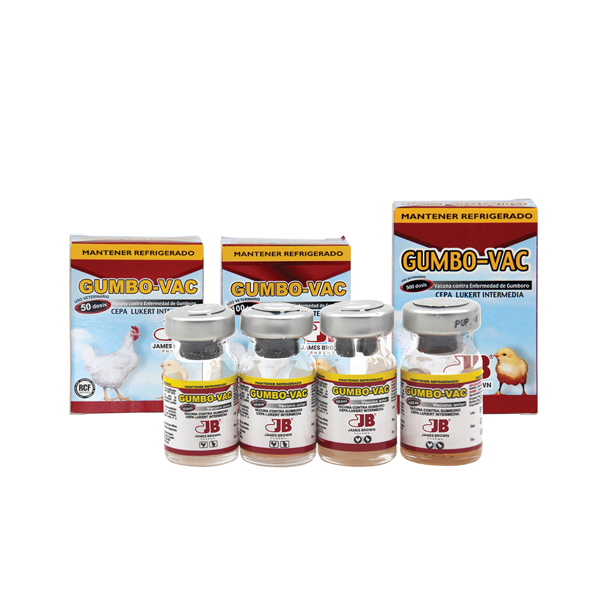
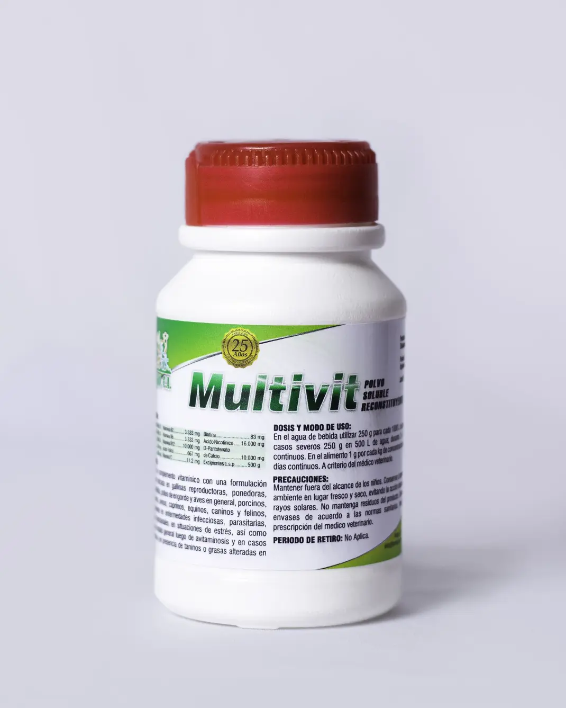
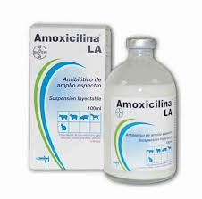
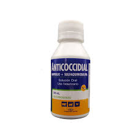
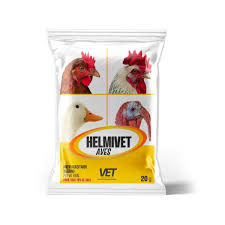
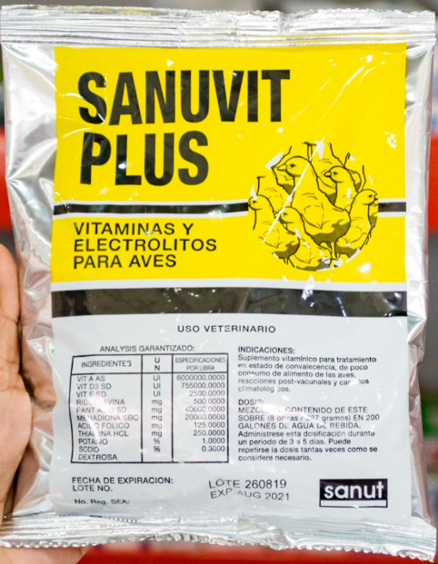

Calendario de Vacunación y Medicación
Haz clic en cualquier fila para ver información detallada del medicamento o vacuna en el panel lateral.
| Días del ciclo | Producto | Dosis | Propósito | Observaciones |
|---|---|---|---|---|
|
8-10
(3 días)
|
Vacuna Newcastle + Gumboro
Haz clic
|
1 dosis/ave (vía ocular/agua) |
Inmunizar contra Newcastle y Gumboro | Vacunación de refuerzo, aplicar en horas frescas |
|
1-5
(5 días)
|
Multivitamínico
Haz clic
|
5 ml/L agua |
Fortalecer sistema inmunológico | Usar en agua de bebida |
|
6-8
(3 días)
|
Amoxicilina
Haz clic
|
1g/4L agua |
Prevenir infecciones bacterianas | Mezclar bien en agua limpia |
|
14-16
(3 días)
|
Anticoccidial
Haz clic
|
Según producto |
Prevenir coccidiosis | Común en pollos jóvenes |
|
21-23
(3 días)
|
Multivitamínico
Haz clic
|
5 ml/L agua |
Refuerzo vitamínico | Importante en fase de crecimiento |
|
28-30
(3 días)
|
Desparasitante
Haz clic
|
1g/10 pollos |
Control de parásitos internos | Mezclar con alimento |
|
35-37
(3 días)
|
Electrolitos
Haz clic
|
10g/L agua |
Reducir estrés por calor | Especial en climas cálidos |
45
Días totales del ciclo
23
Días medicados/vacunados
7
Días de retiro mínimo
7
Tipos de productos
Instrucción: Selecciona cualquier producto en la tabla haciendo clic en la fila correspondiente. La información detallada aparecerá en el panel lateral derecho.
Información del Producto
Detalles completos sobre uso, dosis y beneficios
Selecciona un producto:
Newcastle + Gumboro
Multivitamínico
Amoxicilina
Anticoccidial
Desparasitante
Electrolitos
Selecciona un producto en la tabla o en los botones arriba para ver información detallada aquí.
Galería de Productos
Haz clic en cualquier imagen para ver información detallada del producto.

Newcastle + Gumboro
Vacuna combinada

Multivitamínico
Suplemento vitamínico

Amoxicilina
Antibiótico

Anticoccidial
Antiparasitario

Desparasitante
Antihelmíntico

Electrolitos
Suplemento hidratante
Información Complementaria
Precauciones importantes
- Respetar período de retiro antes del sacrificio (mínimo 7 días)
- Mantener cadena de frío de las vacunas (2-8°C)
- Usar agua libre de cloro y desinfectantes para vacunas
- Consultar con veterinario para dosis y cepas específicas
Equipo necesario
- Jeringa sin aguja para medir líquidos
- Balanza de precisión para polvos (0.1g)
- Envases limpios exclusivos para mezclar
- Mezclador para alimento medicado
- Dosificador para vacunas oculares
Horarios recomendados
- Administrar en horas de menor consumo (tarde)
- Dejar sin agua 2 horas antes de medicar/vacunar en agua
- Monitorear consumo durante medicación
- Cambiar agua medicada cada 24 horas